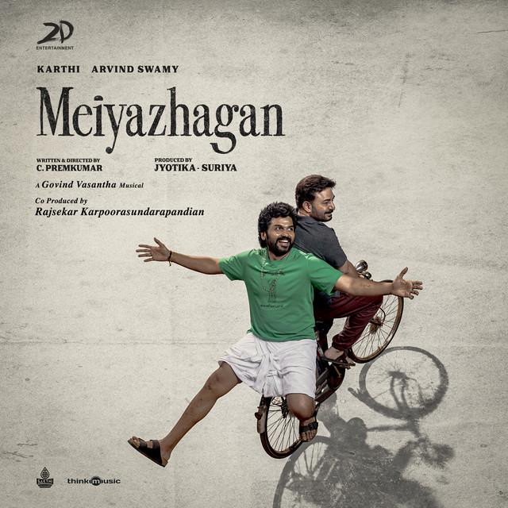

Meiyazhagan (2024)
A Cinematic Celebration of Roots, Relationships, and Unconditional Love

The official theatrical poster of the critically acclaimed Tamil film, Meiyazhagan.
Highlights of the Film
- Director - Directed by C. Prem Kumar, known for his emotional storytelling in '96'.
- The Plot - Follows an urban man who returns to his hometown after decades and rediscovers his roots through a compassionate cousin whose name he cannot recall.
- Performances - Brilliant, career-best portrayals by Karthi (as the innocent village brother) and Arvind Swamy (as Arulmozhi).
- The Music - Composed beautifully by Govind Vasantha, providing a soulful backdrop to the story's emotional landscape.
- Themes - Explores heavy topics like childhood nostalgia, displacement, family bonds, and the deep emotional connection to one's native land.
- Impact - Celebrated by Tamil cinema audiences worldwide as a poetic, dialogic masterpiece that breaks away from commercial violent action trends.
"The movie reminds us that real wealth lies not in our urban possessions, but in the pure, unfiltered love and simple kindness we share with humanity."